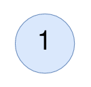

Given the root of a binary tree, return the
number of nodes where the value of the node is equal to the average of the values in its subtree.
Note:
- The average of
nelements is the sum of thenelements divided bynand rounded down to the nearest integer. - A subtree of
rootis a tree consisting ofrootand all of its descendants.
Example 1:

Input: root = [4,8,5,0,1,null,6] Output: 5 Explanation: For the node with value 4: The average of its subtree is (4 + 8 + 5 + 0 + 1 + 6) / 6 = 24 / 6 = 4. For the node with value 5: The average of its subtree is (5 + 6) / 2 = 11 / 2 = 5. For the node with value 0: The average of its subtree is 0 / 1 = 0. For the node with value 1: The average of its subtree is 1 / 1 = 1. For the node with value 6: The average of its subtree is 6 / 1 = 6.
Example 2:
Input: root = [1] Output: 1 Explanation: For the node with value 1: The average of its subtree is 1 / 1 = 1.
Constraints:
- The number of nodes in the tree is in the range
[1, 1000]. 0 <= Node.val <= 1000